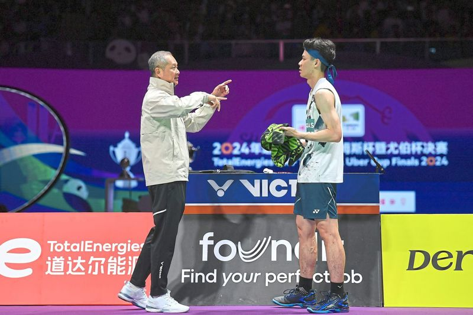

.png)
Wednesday, 08 May 2024
Let’s get tactical: Coach Wong Tat Meng instructing Lee Zii Jia during his match against Shi Yuqi in the first singles of Malaysia’s Thomas Cup semi-final match against China in Chengdu. — IZZRAFIQ ALIAS/The Star
PETALING JAYA: Helping Lee Zii Jia to peak at the Paris Olympics will probably be Wong Tat Meng’s final mission as the latter wants to take a deserving retirement from international coaching at the end of this year. Tat Meng, 57, believes that it is not only the right time for him to take a break after being involved in the global coaching scene for 20 years but he firmly believes the timing is good for Zii Jia to peak in Paris. The globe-trotting coach has served as the men’s and women’s singles coach in several countries before taking up the task of guiding Zii Jia to the Olympics in June last year. “When I was initially engaged to coach Zii Jia, his team were looking until 2028 but I had told them 2024 Paris would be the right time for him to peak and not in 2028 in Los Angeles,” said Tat Meng.
“The game is so fast and the physical demands are so high. It will be really tough to continue remaining at the peak at the age of 30 and beyond. “Zii Jia and I have a good understanding and our objective is to fully focus on our preparation for the Paris Olympics. “It’s definitely a do-or-die battle for him and also for me as it is unlikely that I will continue with international coaching after the contract with Zii Jia.
“I have been coaching internationally for 20 years and I think it’s also about time for me to retire once I fulfil my contract and complete my Olympic mission with Zii Jia. “I don’t have any deep thoughts on my future plans for now as I want to take a break and possibly venture abroad.” Besides coaching at the Badminton Association of Malaysia (BAM), Tat Meng had stints in Indonesia, Scotland, South Korea and Hong Kong since 2004.
Tat Meng also had a hand in moulding current women’s singles world No. 1 An Se-young of South Korea during the early years of her career. Gearing Zii Jia up for the Paris Olympics is the only concern for Tat Meng as he conducted a training session yesterday a few hours after returning from Chengdu where Malaysia reached the semi-finals. “We came back in the morning today and held a training session in the afternoon as I want to assess if Zii Jia is ready for the Thailand Open,” added Tat Meng. “Zia Jia also had fever in Chengdu and quite a few were unwell there. I have to see his condition and decide in the next few days whether he is fit enough to play in Thailand.” Should Zii Jia skip the Thailand Open from May 14-19, he is set to focus on the Malaysian Masters from May 21-24 in his build-up to the Olympics.